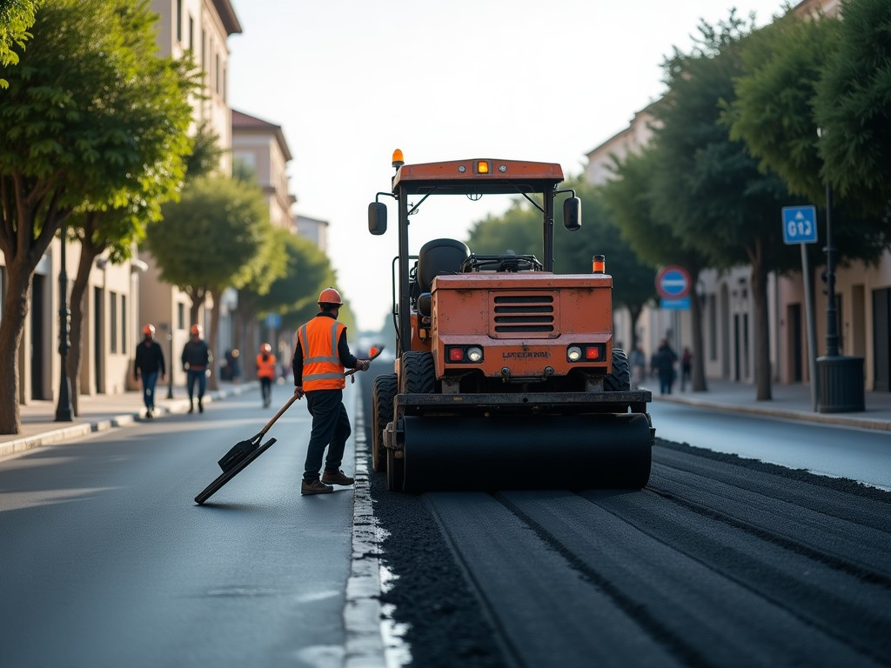

Yolu yapar, makinesini getiririz.
Asfalt, parke, altyapı ve operatörlü iş makinesi kiralama. Müsait makineyi görün, kiralama teklifini anında alın.
Dört iş, tek ekip
- Im²
Asfalt
Site içi yol, otopark, yama, kazıma - IIm² · m
Parke ve bordür
Kaldırım, site yolu, otopark - IIIm · m³
Altyapı
Kanal kazısı, stabilize, tesviye - IVgün
İş makinesi kiralama
Silindir, finişer, bekoloder, greyder, kamyon
"Makine bugün boş mu, yarın gelebilir mi?" sorusunun cevabı artık sitede.
Temsilî metin; firmanın kendi hizmet listesi ve makine parkıyla değişir.
Hangi makine hangi gün boş?
Makineyi seçin, 21 günlük takvimde boş günleri görün, şantiye ilçesini seçin. Kira, nakliye ve KDV'li toplam anında. Dolu güne denk gelirse ilk boş tarih ve boştaki benzer makine önerilir.

Kaç ton, kaç adet, kaç gün?
Asfaltta alan ve kalınlıktan tonaj, kamyon seferi ve iş günü; parkede taş adedi, bordür ve yatak kumu. Ön hesap; kesin metraj ücretsiz keşifte.
Şantiye defteri
İhale dosyasına ve kurumsal müşteriye gösterilecek iş listesi: yer, metraj, süre, makine.
Yol ve asfalt rehberi
Site yöneticilerinin ve müteahhitlerin Google'da sorduğu sorulara kısa cevaplar. Ayda 4 yeni yazı.
Fener Mah., Muratpaşa
Bülent Ecevit Blv. No:201, 07230 Muratpaşa / Antalya